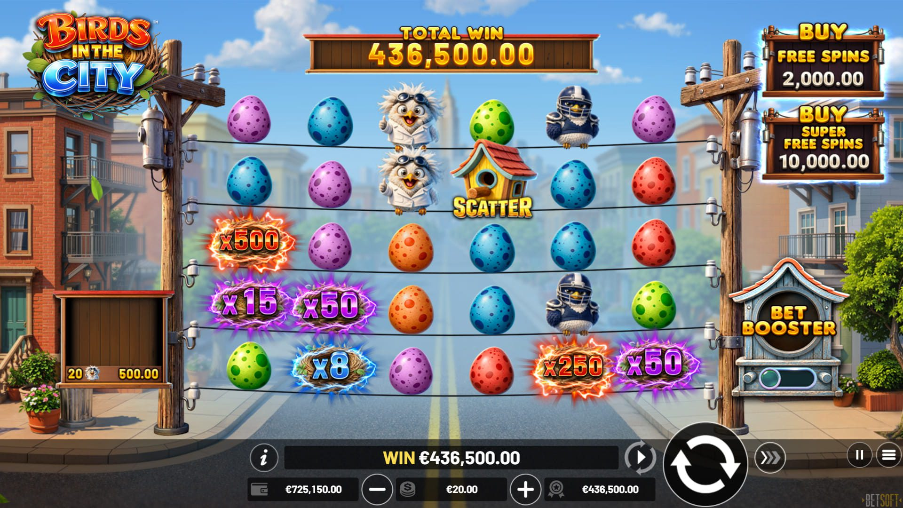
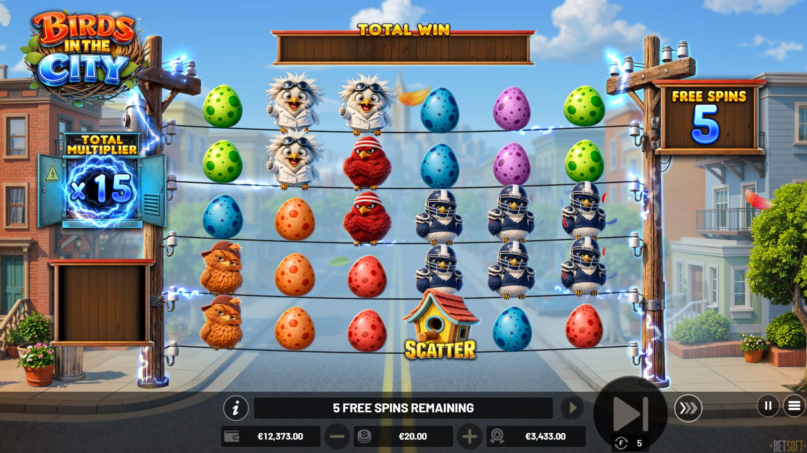
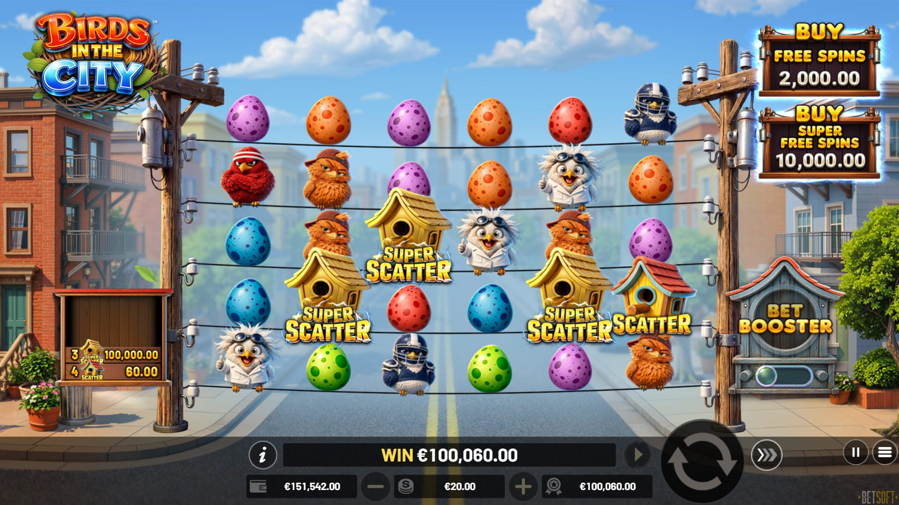

Birds in The City (Betsoft): secuela que paga en cualquier posición, multiplicadores x500 y giros gratis con Super Scatter
Publicado el 11 de octubre de 2026. Betsoft lanzó Birds in The City el 8 de octubre: una secuela de volatilidad muy alta de su tragamonedas BIRDS, en cuadrícula 6x5 donde los premios pagan en cualquier posición y caen en cascada, con símbolos multiplicadores de hasta x500 y un Super Scatter que suma dinero instantáneo al activar los giros gratis.

Arte oficial del juego: Betsoft.
Datos clave
| Proveedor | Betsoft |
|---|---|
| Fecha de lanzamiento | 8 de octubre de 2026 |
| Diseño | Cuadrícula 6x5, paga en cualquier posición, premios en cascada |
| RTP | 95,87% |
| Volatilidad | Muy alta |
| Frecuencia de aciertos | 28,97% |
| Mecánica principal | Multiplicadores de hasta x500; premios instantáneos con Super Scatter; giros gratis con multiplicador total creciente; Bet Booster |
Cómo se juega
Ocho o más símbolos iguales en cualquier parte de la cuadrícula 6x5 forman un premio, y los símbolos ganadores desaparecen mientras otros nuevos caen en cascada hasta que ya no quede ningún premio. Los símbolos multiplicadores de hasta x500 pueden caer en cualquier giro o cascada del juego base y de los giros gratis: todos los multiplicadores en pantalla se suman y se aplican al premio cuando terminan las cascadas.

Los multiplicadores de hasta x500 se suman y se aplican cuando terminan las cascadas. Captura oficial: Betsoft.
Cuatro o más símbolos de dispersión de cualquier tipo activan 15 giros gratis. Durante la ronda, cada multiplicador que cae en un giro con premio se suma a un multiplicador total que va creciendo y se aplica al premio, así que la función se pone mejor a medida que avanza. Tres o más símbolos de dispersión reactivan 5 giros extra. Si en la combinación que activa la función hay al menos un Super Scatter, se suma un premio instantáneo en dinero, según cuántos Super Scatter aparezcan.

Giros gratis con multiplicador total creciente. Captura oficial: Betsoft.
Los símbolos Mystery, que se transforman en los carretes, y el Bet Booster, que aumenta las chances de activar los giros gratis en el juego base, completan el paquete.

Los símbolos Super Scatter suman un premio instantáneo al activar los giros gratis. Captura oficial: Betsoft.
Dónde jugar
Los títulos de Betsoft están en los lobbies de Vave y N1 Casino - la disponibilidad cambia por región, así que revisa el lobby en tu país antes de depositar.